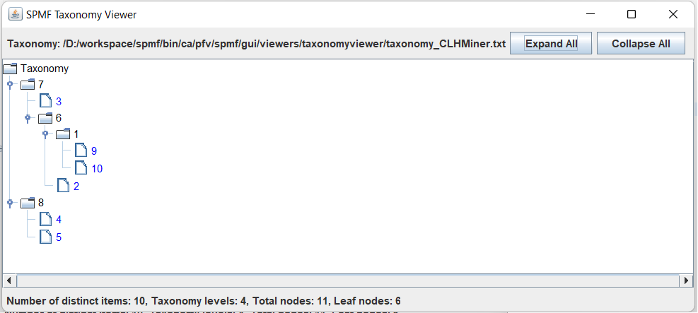
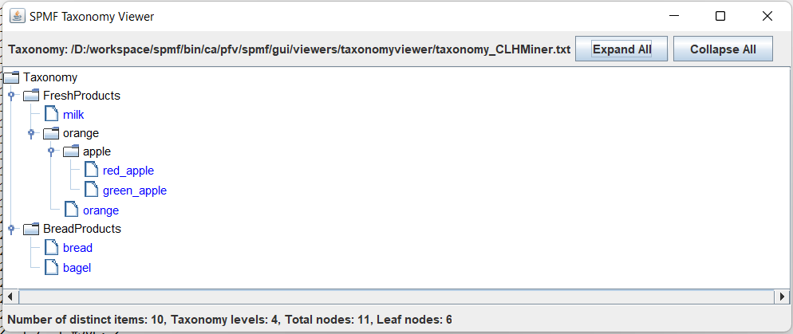

View a taxonomy file with the Taxonomy Viewer (SPMF documentation)
A taxonomy file is a type of file used by some pattern mining algorithms offered in SPMF such as CLH-MINER and FHEACP .
SPMF offers a simple tool to view the content of a taxonmy file. This tool is called the SPMF Taxonomy Viewer.
This page explains how to use this tool with an example.
How to run this example?
If you want to run this example from the graphical interface of SPMF, (1) choose the algorithm "Open_taxonomy_file_with_taxonomy_viewer", (2) choose the Taxonomy_CLHMiner.txt file as input, and then (3) click "run algorithm" .
- If you want to run this example from the source code of SPMF, run the file MainTestTaxonomyViewer, which is located in the package ca.pfv.spmf.tests
- If you want to execute this example from the command line interface of SPMF, then execute this command:
java -jar spmf.jar run Open_taxonomy_file_with_taxonomy_viewer Taxonomy_CLHMiner.txt
in a folder containing spmf.jar and the file Taxonomy_CLHMiner.txt which is included with SPMF.
What is displayed?
After running the example, the content of the file will be displayed by the tool. The picture below shows the user interface of this viewer.

The taxonomy viewer displays a taxonomy as a tree. There are two buttons to expand or collapse all nodes from the tree. Moreover, there is a status bar at the bottom that display statistical information about the taxonomy.
What is the input?
The algorithm takes as input a taxonomy file in SPMF format, as used by algorithm such CLH-Miner.
The taxonomy file used in this example is provided in the text file "taxonomy_CLHMiner.txt" in the package ca.pfv.spmf.tests of the SPMF distribution. This taxonomy file consists of 5 items, with 2 leafs and 3 generalized items (categories).
In a taxonomy file, each line indicates a relationship between two items.
The format of a line is an item (an integer), followed by ",", followed by another item (an integer) representing a category. The meaning is that the first item belong to the category represented by the second item.
For example, the example taxonmy file has this content:
1,6
2,6
3,7
4,8
5,8
6,7
Consider the first line. It means that the item 1 belongs to the category 6. The other lines follow the same format.
Optional feature: also loading a transaction file containing item names
There is also an optional feature, which is to also load a transaction file containing item names (strings) so that the items are displayed using strings instead of integers. To do this, in the user interface of SPMF, you can set the parameter Transaction File to "transaction_CLHMiner.txt". If you are using the command line interface of SPMF, you can run the example using this command: java -jar spmf.jar run Open_taxonomy_file_with_taxonomy_viewer Taxonomy_CLHMiner.txt transaction_CLHMiner.txt
In this example, the content of the transaction file is like this:
@ITEM=1=apple
@ITEM=2=orange
@ITEM=3=milk
@ITEM=4=bread
.... (followed by other lines)
This defines that the item 1 is called Apple, the item 2 is orange, the item 3 is milk and the item 4 is bread, and so on. Then these names are displayed in the taxonomy viewer:

Note that in this example, we did not give name to categories such as items 6, 7, and 8. But it is possible to do so.
For more details about the transaction database format of CLH-Miner, you may see the documentation of that algorithm.